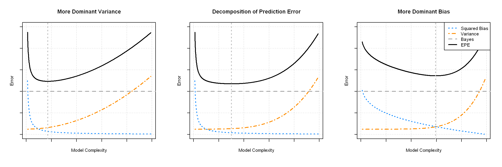
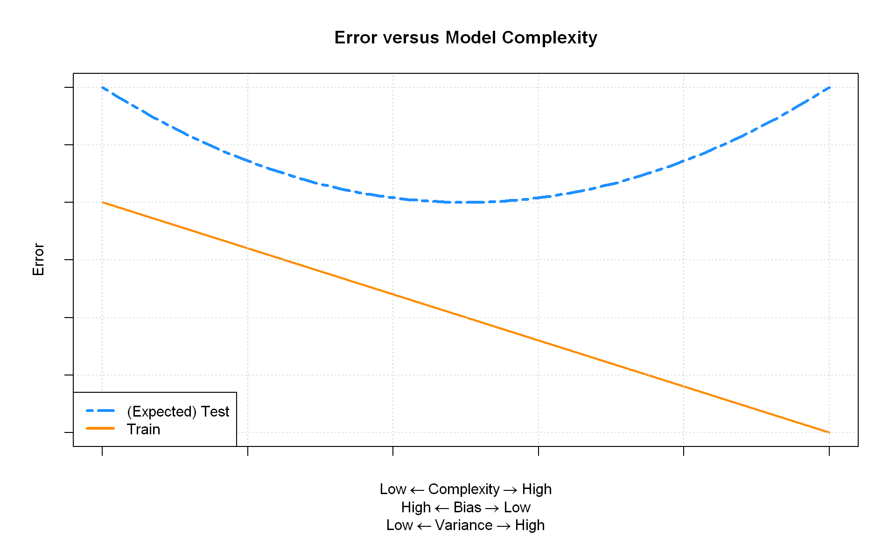
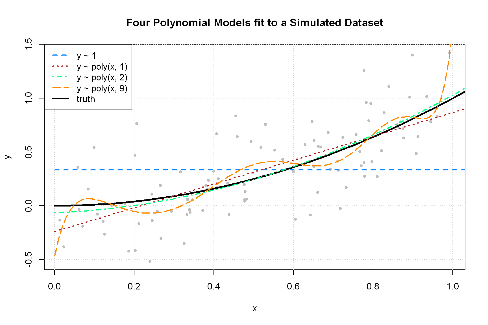
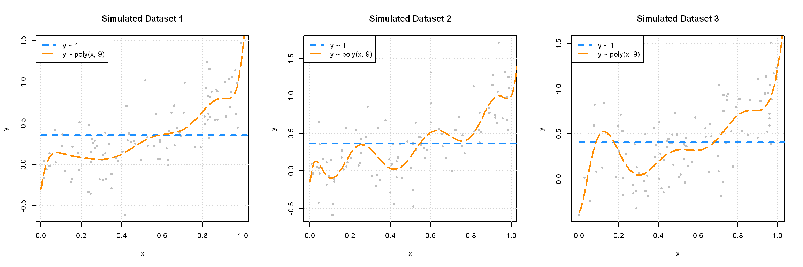
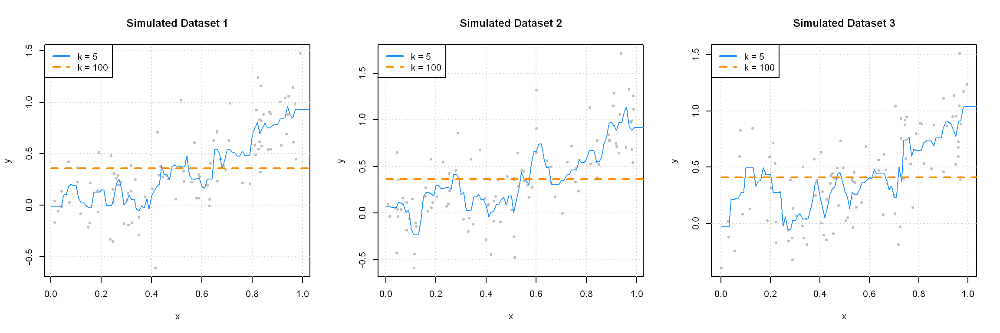
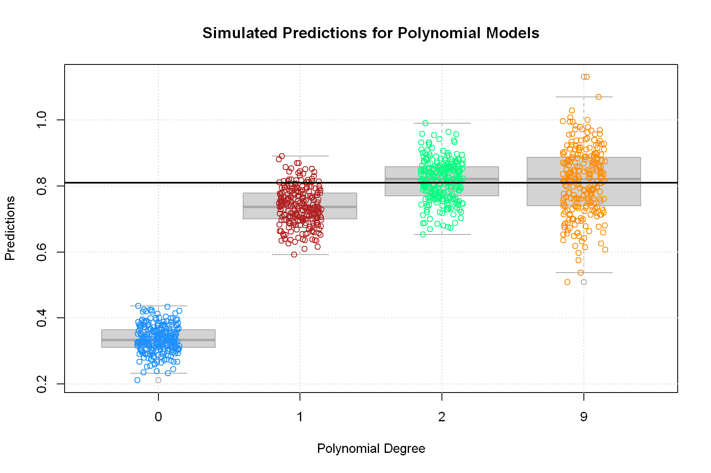

Bias–Variance Tradeoff
NYU — Applied Statistics and Econometrics II
Notation used in this notebook
| Symbol | Meaning |
|---|---|
| \(p\) | Number of features (input dimensions); \((X,Y)\in\mathbb{R}^p\times\mathbb{R}\) |
| \(n\) | Sample size |
| \(d\) | Polynomial degree — the complexity index for polynomial models |
| \(k\) | Number of neighbors in \(k\)-nearest neighbors (kNN) |
| \(\hat{f}_d\) | The estimator obtained by fitting a polynomial of degree \(d\) |
Why the distinction matters. This notebook uses polynomials (\(d\)) and kNN (\(k\)) as two running examples of model complexity. Both have a tuning parameter that controls the bias-variance tradeoff, but they are conceptually different objects and use different letters throughout.
Consider the general regression setup where we are given a random pair \((X, Y) \in \mathbb{R}^p \times \mathbb{R}\). We would like to “predict” \(Y\) with some function of \(X\), say, \(f(X)\).
To clarify what we mean by “predict,” we specify that we would like \(f(X)\) to be “close” to \(Y\). To further clarify what we mean by “close,” we define the squared error loss of estimating \(Y\) using \(f(X)\).
\[ L(Y, f(X)) \triangleq (Y - f(X)) ^ 2 \]
Now we can clarify the goal of regression, which is to minimize the above loss, on average. We call this the risk of estimating \(Y\) using \(f(X)\).
\[ R(Y, f(X)) \triangleq \mathbb{E}[L(Y, f(X))] = \mathbb{E}_{X, Y}[(Y - f(X)) ^ 2] \]
Before attempting to minimize the risk, we first re-write the risk after conditioning on \(X\).
\[ \mathbb{E}_{X, Y} \left[ (Y - f(X)) ^ 2 \right] = \mathbb{E}_{X} \mathbb{E}_{Y \mid X} \left[ ( Y - f(X) ) ^ 2 \mid X = x \right] \]
Minimizing the right-hand side is much easier, as it simply amounts to minimizing the inner expectation with respect to \(Y \mid X\), essentially minimizing the risk pointwise, for each \(x\).
It turns out, that the risk is minimized by the conditional mean of \(Y\) given \(X\),
\[ f(x) = \mathbb{E}(Y \mid X = x) \]
which we call the regression function.
Note that the choice of squared error loss is somewhat arbitrary. Suppose instead we chose absolute error loss.
\[ L(Y, f(X)) \triangleq | Y - f(X) | \]
The risk would then be minimized by the conditional median.
\[ f(x) = \text{median}(Y \mid X = x) \]
Despite this possibility, our preference will still be for squared error loss. The reasons for this are numerous, including: historical, ease of optimization, and protecting against large deviations.
Now, given data \(\mathcal{D} = (x_i, y_i) \in \mathbb{R}^p \times \mathbb{R}\), our goal becomes finding some \(\hat{f}\) that is a good estimate of the regression function \(f\). We’ll see that this amounts to minimizing what we call the reducible error.
1 Reducible and Irreducible Error
Suppose that we obtain some \(\hat{f}\), how well does it estimate \(f\)? We define the expected prediction error of predicting \(Y\) using \(\hat{f}(X)\). A good \(\hat{f}\) will have a low expected prediction error.
\[ \text{EPE}\left(Y, \hat{f}(X)\right) \triangleq \mathbb{E}_{X, Y, \mathcal{D}} \left[ \left( Y - \hat{f}(X) \right)^2 \right] \]
This expectation is over \(X\), \(Y\), and also \(\mathcal{D}\). The estimate \(\hat{f}\) is actually random depending on the sampled data \(\mathcal{D}\). We could actually write \(\hat{f}(X, \mathcal{D})\) to make this dependence explicit, but our notation will become cumbersome enough as it is.
Like before, we’ll condition on \(X\). This results in the expected prediction error of predicting \(Y\) using \(\hat{f}(X)\) when \(X = x\).
\[ \text{EPE}\left(Y, \hat{f}(x)\right) = \mathbb{E}_{Y \mid X, \mathcal{D}} \left[ \left(Y - \hat{f}(X) \right)^2 \mid X = x \right] = \underbrace{\mathbb{E}_{\mathcal{D}} \left[ \left(f(x) - \hat{f}(x) \right)^2 \right]}_\textrm{reducible error} + \underbrace{\mathbb{V}_{Y \mid X} \left[ Y \mid X = x \right]}_\textrm{irreducible error} \]
A number of things to note here:
- The expected prediction error is for a random \(Y\) given a fixed \(x\) and a random \(\hat{f}\). As such, the expectation is over \(Y \mid X\) and \(\mathcal{D}\). Our estimated function \(\hat{f}\) is random depending on the sampled data, \(\mathcal{D}\), which is used to perform the estimation.
- The expected prediction error of predicting \(Y\) using \(\hat{f}(X)\) when \(X = x\) has been decomposed into two errors:
- The reducible error, which is the expected squared error loss of estimating \(f(x)\) using \(\hat{f}(x)\) at a fixed point \(x\). The only thing that is random here is \(\mathcal{D}\), the data used to obtain \(\hat{f}\). (Both \(f\) and \(x\) are fixed.) We’ll often call this reducible error the mean squared error of estimating \(f(x)\) using \(\hat{f}\) at a fixed point \(x\). \[ \text{MSE}\left(f(x), \hat{f}(x)\right) \triangleq \mathbb{E}_{\mathcal{D}} \left[ \left(f(x) - \hat{f}(x) \right)^2 \right]\]
- The irreducible error. This is simply the variance of \(Y\) given that \(X = x\), essentially noise that we do not want to learn. This is also called the Bayes error.
As the name suggests, the reducible error is the error that we have some control over. But how do we control this error?
2 Bias-Variance Decomposition
After decomposing the expected prediction error into reducible and irreducible error, we can further decompose the reducible error.
Recall the definition of the bias of an estimator.
\[ \text{bias}(\hat{\theta}) \triangleq \mathbb{E}\left[\hat{\theta}\right] - \theta \]
Also recall the definition of the variance of an estimator.
\[ \mathbb{V}(\hat{\theta}) = \text{var}(\hat{\theta}) \triangleq \mathbb{E}\left [ ( \hat{\theta} -\mathbb{E}\left[\hat{\theta}\right] )^2 \right] \]
Using this, we further decompose the reducible error (mean squared error) into bias squared and variance.
\[ \text{MSE}\left(f(x), \hat{f}(x)\right) = \mathbb{E}_{\mathcal{D}} \left[ \left(f(x) - \hat{f}(x) \right)^2 \right] = \underbrace{\left(f(x) - \mathbb{E} \left[ \hat{f}(x) \right] \right)^2}_{\text{bias}^2 \left(\hat{f}(x) \right)} + \underbrace{\mathbb{E} \left[ \left( \hat{f}(x) - \mathbb{E} \left[ \hat{f}(x) \right] \right)^2 \right]}_{\text{var} \left(\hat{f}(x) \right)} \]
This is actually a common fact in estimation theory, but we have stated it here specifically for estimation of some regression function \(f\) using \(\hat{f}\) at some point \(x\).
\[ \text{MSE}\left(f(x), \hat{f}(x)\right) = \text{bias}^2 \left(\hat{f}(x) \right) + \text{var} \left(\hat{f}(x) \right) \]
In a perfect world, we would be able to find some \(\hat{f}\) which is unbiased, that is \(\text{bias}\left(\hat{f}(x) \right) = 0\), which also has low variance. In practice, this isn’t always possible.
It turns out, there is a bias-variance tradeoff. That is, often, the more bias in our estimation, the lesser the variance. Similarly, less variance is often accompanied by more bias. Complex models tend to be unbiased, but highly variable. Simple models are often extremely biased, but have low variance.
In the context of regression, models are biased when:
- Parametric: The form of the model does not incorporate all the necessary variables, or the form of the relationship is too simple. For example, a parametric model assumes a linear relationship, but the true relationship is quadratic.
- Non-parametric: The model provides too much smoothing.
In the context of regression, models are variable when:
- Parametric: The form of the model incorporates too many variables, or the form of the relationship is too complex. For example, a parametric model assumes a cubic relationship, but the true relationship is linear.
- Non-parametric: The model does not provide enough smoothing. It is very, “wiggly.”
So for us, to select a model that appropriately balances the tradeoff between bias and variance, and thus minimizes the reducible error, we need to select a model of the appropriate complexity for the data.
Recall that when fitting models, we’ve seen that train RMSE decreases as model complexity is increasing. (Technically it is non-increasing.) For test RMSE, we expect to see a U-shaped curve. Importantly, test RMSE decreases, until a certain complexity, then begins to increase.
The three plots show three examples of the bias-variance tradeoff. In the left panel, the variance influences the expected prediction error more than the bias. In the right panel, the opposite is true. The middle panel is somewhat neutral. In all cases, the difference between the Bayes error (the horizontal dashed grey line) and the expected prediction error (the solid black curve) is exactly the mean squared error, which is the sum of the squared bias (blue curve) and variance (orange curve). The vertical line indicates the complexity that minimizes the prediction error.
To summarize, if we assume that irreducible error can be written as
\[ \mathbb{V}[Y \mid X = x] = \sigma ^ 2 \]
then we can write the full decomposition of the expected prediction error of predicting \(Y\) using \(\hat{f}\) when \(X = x\) as
\[ \text{EPE}\left(Y, \hat{f}(x)\right) = \underbrace{\text{bias}^2\left(\hat{f}(x)\right) + \text{var}\left(\hat{f}(x)\right)}_\textrm{reducible error} + \sigma^2. \]
As model complexity increases, bias decreases, while variance increases. By understanding the tradeoff between bias and variance, we can manipulate model complexity to find a model that well predict well on unseen observations.

3 Simulation
We will illustrate these decompositions, most importantly the bias-variance tradeoff, through simulation. Suppose we would like to train a model to learn the true regression function function \(f(x) = x^2\).
f = function(x) {
x ^ 2
}More specifically, we’d like to predict an observation, \(Y\), given that \(X = x\) by using \(\hat{f}(x)\) where
\[ \mathbb{E}[Y \mid X = x] = f(x) = x^2 \]
and
\[ \mathbb{V}[Y \mid X = x] = \sigma ^ 2. \]
Alternatively, we could write this as
\[ Y = f(X) + \epsilon \]
where \(\mathbb{E}[\epsilon] = 0\) and \(\mathbb{V}[\epsilon] = \sigma ^ 2\). In this formulation, we call \(f(X)\) the signal and \(\epsilon\) the noise.
To carry out a concrete simulation example, we need to fully specify the data generating process. We do so with the following R code.
get_sim_data = function(f, sample_size = 100) {
x = runif(n = sample_size, min = 0, max = 1)
y = rnorm(n = sample_size, mean = f(x), sd = 0.3)
data.frame(x, y)
}Also note that if you prefer to think of this situation using the \(Y = f(X) + \epsilon\) formulation, the following code represents the same data generating process.
get_sim_data = function(f, sample_size = 100) {
x = runif(n = sample_size, min = 0, max = 1)
eps = rnorm(n = sample_size, mean = 0, sd = 0.75)
y = f(x) + eps
data.frame(x, y)
}To completely specify the data generating process, we have made more model assumptions than simply \(\mathbb{E}[Y \mid X = x] = x^2\) and \(\mathbb{V}[Y \mid X = x] = \sigma ^ 2\). In particular,
- The \(x_i\) in \(\mathcal{D}\) are sampled from a uniform distribution over \([0, 1]\).
- The \(x_i\) and \(\epsilon\) are independent.
- The \(y_i\) in \(\mathcal{D}\) are sampled from the conditional normal distribution.
\[ Y \mid X \sim N(f(x), \sigma^2) \]
Using this setup, we will generate datasets, \(\mathcal{D}\), with a sample size \(n = 100\) and fit four models.
\[ \begin{aligned} \texttt{predict(fit0, x)} &= \hat{f}_0(x) = \hat{\beta}_0\\ \texttt{predict(fit1, x)} &= \hat{f}_1(x) = \hat{\beta}_0 + \hat{\beta}_1 x \\ \texttt{predict(fit2, x)} &= \hat{f}_2(x) = \hat{\beta}_0 + \hat{\beta}_1 x + \hat{\beta}_2 x^2 \\ \texttt{predict(fit9, x)} &= \hat{f}_9(x) = \hat{\beta}_0 + \hat{\beta}_1 x + \hat{\beta}_2 x^2 + \ldots + \hat{\beta}_9 x^9 \end{aligned} \]
To get a sense of the data and these four models, we generate one simulated dataset, and fit the four models.
set.seed(1)
sim_data = get_sim_data(f)fit_0 = lm(y ~ 1, data = sim_data)
fit_1 = lm(y ~ poly(x, degree = 1), data = sim_data)
fit_2 = lm(y ~ poly(x, degree = 2), data = sim_data)
fit_9 = lm(y ~ poly(x, degree = 9), data = sim_data)Note that technically we’re being lazy and using orthogonal polynomials, but the fitted values are the same, so this makes no difference for our purposes.
Plotting these four trained models, we see that the zero predictor model does very poorly. The first degree model is reasonable, but we can see that the second degree model fits much better. The ninth degree model seem rather wild.

The following three plots were created using three additional simulated datasets. The zero predictor and ninth degree polynomial were fit to each.

This plot should make clear the difference between the bias and variance of these two models. The zero predictor model is clearly wrong, that is, biased, but nearly the same for each of the datasets, since it has very low variance.
While the ninth degree model doesn’t appear to be correct for any of these three simulations, we’ll see that on average it is, and thus is performing unbiased estimation. These plots do however clearly illustrate that the ninth degree polynomial is extremely variable. Each dataset results in a very different fitted model. Correct on average isn’t the only goal we’re after, since in practice, we’ll only have a single dataset. This is why we’d also like our models to exhibit low variance.
We could have also fit \(k\)-nearest neighbors models to these three datasets.

Here we see that when \(k = 100\) we have a biased model with very low variance. (It’s actually the same as the 0 predictor linear model.) When \(k = 5\), we again have a highly variable model.
These two sets of plots reinforce our intuition about the bias-variance tradeoff. Complex models (ninth degree polynomial and \(k\) = 5) are highly variable, and often unbiased. Simple models (zero predictor linear model and \(k = 100\)) are very biased, but have extremely low variance.
We will now complete a simulation study to understand the relationship between the bias, variance, and mean squared error for the estimates for \(f(x)\) given by these four models at the point \(x = 0.90\). We use simulation to complete this task, as performing the analytical calculations would prove to be rather tedious and difficult.
set.seed(1)
n_sims = 250
n_models = 4
x = data.frame(x = 0.90) # fixed point at which we make predictions
predictions = matrix(0, nrow = n_sims, ncol = n_models)for (sim in 1:n_sims) {
# simulate new, random, training data
# this is the only random portion of the bias, var, and mse calculations
# this allows us to calculate the expectation over D
sim_data = get_sim_data(f)
# fit models
fit_0 = lm(y ~ 1, data = sim_data)
fit_1 = lm(y ~ poly(x, degree = 1), data = sim_data)
fit_2 = lm(y ~ poly(x, degree = 2), data = sim_data)
fit_9 = lm(y ~ poly(x, degree = 9), data = sim_data)
# get predictions
predictions[sim, 1] = predict(fit_0, x)
predictions[sim, 2] = predict(fit_1, x)
predictions[sim, 3] = predict(fit_2, x)
predictions[sim, 4] = predict(fit_9, x)
}Note that this is one of many ways we could have accomplished this task using R. For example we could have used a combination of replicate() and *apply() functions. Alternatively, we could have used a tidyverse approach, which likely would have used some combination of dplyr, tidyr, and purrr.
Our approach, which would be considered a base R approach, was chosen to make it as clear as possible what is being done. The tidyverse approach is rapidly gaining popularity in the R community, but might make it more difficult to see what is happening here, unless you are already familiar with that approach.
Also of note, while it may seem like the output stored in predictions would meet the definition of tidy data given by Hadley Wickham since each row represents a simulation, it actually falls slightly short. For our data to be tidy, a row should store the simulation number, the model, and the resulting prediction. We’ve actually already aggregated one level above this. Our observational unit is a simulation (with four predictions), but for tidy data, it should be a single prediction.

The above plot shows the predictions for each of the 250 simulations of each of the four models of different polynomial degrees. The truth, \(f(x = 0.90) = (0.9)^2 = 0.81\), is given by the solid black horizontal line.
Two things are immediately clear:
- As complexity increases, bias decreases. (The mean of a model’s predictions is closer to the truth.)
- As complexity increases, variance increases. (The variance about the mean of a model’s predictions increases.)
The goal of this simulation study is to show that the following holds true for each of the four models.
\[ \text{MSE}\left(f(0.90), \hat{f}_d(0.90)\right) = \underbrace{\left(\mathbb{E} \left[ \hat{f}_d(0.90) \right] - f(0.90) \right)^2}_{\text{bias}^2 \left(\hat{f}_d(0.90) \right)} + \underbrace{\mathbb{E} \left[ \left( \hat{f}_d(0.90) - \mathbb{E} \left[ \hat{f}_d(0.90) \right] \right)^2 \right]}_{\text{var} \left(\hat{f}_d(0.90) \right)} \]
We’ll use the empirical results of our simulations to estimate these quantities. (Yes, we’re using estimation to justify facts about estimation.) Note that we’ve actually used a rather small number of simulations. In practice we should use more, but for the sake of computation time, we’ve performed just enough simulations to obtain the desired results. (Since we’re estimating estimation, the bigger the sample size, the better.)
To estimate the mean squared error of our predictions, we’ll use
\[ \widehat{\text{MSE}}\left(f(0.90), \hat{f}_d(0.90)\right) = \frac{1}{n_{\texttt{sims}}}\sum_{i = 1}^{n_{\texttt{sims}}} \left(f(0.90) - \hat{f}_d(0.90) \right)^2 \]
We also write an accompanying R function.
get_mse = function(truth, estimate) {
mean((estimate - truth) ^ 2)
}Similarly, for the bias of our predictions we use,
\[ \widehat{\text{bias}} \left(\hat{f}(0.90) \right) = \frac{1}{n_{\texttt{sims}}}\sum_{i = 1}^{n_{\texttt{sims}}} \left(\hat{f}_d(0.90) \right) - f(0.90) \]
And again, we write an accompanying R function.
get_bias = function(estimate, truth) {
mean(estimate) - truth
}Lastly, for the variance of our predictions we have
\[ \widehat{\text{var}} \left(\hat{f}(0.90) \right) = \frac{1}{n_{\texttt{sims}}}\sum_{i = 1}^{n_{\texttt{sims}}} \left(\hat{f}_d(0.90) - \frac{1}{n_{\texttt{sims}}}\sum_{i = 1}^{n_{\texttt{sims}}}\hat{f}_d(0.90) \right)^2 \]
While there is already R function for variance, the following is more appropriate in this situation.
get_var = function(estimate) {
mean((estimate - mean(estimate)) ^ 2)
}To quickly obtain these results for each of the four models, we utilize the apply() function.
bias = apply(predictions, 2, get_bias, truth = f(x = 0.90))
variance = apply(predictions, 2, get_var)
mse = apply(predictions, 2, get_mse, truth = f(x = 0.90))We summarize these results in the following table.
| Degree | Mean Squared Error | Bias Squared | Variance |
|---|---|---|---|
| 0 | 0.22643 | 0.22476 | 0.00167 |
| 1 | 0.00829 | 0.00508 | 0.00322 |
| 2 | 0.00387 | 0.00005 | 0.00381 |
| 9 | 0.01019 | 0.00002 | 0.01017 |
A number of things to notice here:
- We use squared bias in this table. Since bias can be positive or negative, squared bias is more useful for observing the trend as complexity increases.
- The squared bias trend which we see here is decreasing as complexity increases, which we expect to see in general.
- The exact opposite is true of variance. As model complexity increases, variance increases.
- The mean squared error, which is a function of the bias and variance, decreases, then increases. This is a result of the bias-variance tradeoff. We can decrease bias, by increasing variance. Or, we can decrease variance by increasing bias. By striking the correct balance, we can find a good mean squared error!
We can check for these trends with the diff() function in R.
all(diff(bias ^ 2) < 0)[1] TRUEall(diff(variance) > 0)[1] TRUEdiff(mse) < 0 1 2 9
TRUE TRUE FALSE The models with polynomial degrees 2 and 9 are both essentially unbiased. We see some bias here as a result of using simulation. If we increased the number of simulations, we would see both biases go down. Since they are both unbiased, the model with degree 2 outperforms the model with degree 9 due to its smaller variance.
Models with degree 0 and 1 are biased because they assume the wrong form of the regression function. While the degree 9 model does this as well, it does include all the necessary polynomial degrees.
\[ \hat{f}_9(x) = \hat{\beta}_0 + \hat{\beta}_1 x + \hat{\beta}_2 x^2 + \ldots + \hat{\beta}_9 x^9 \]
Then, since least squares estimation is unbiased, importantly,
\[ \mathbb{E}[\hat{\beta}_d] = \beta_d = 0 \]
for \(d = 3, 4, \ldots 9\), we have
\[ \mathbb{E}\left[\hat{f}_9(x)\right] = \beta_0 + \beta_1 x + \beta_2 x^2 \]
Now we can finally verify the bias-variance decomposition.
bias ^ 2 + variance == mse 0 1 2 9
FALSE FALSE TRUE TRUE But wait, this says it isn’t true, except for the degree 9 model? It turns out, this is simply a computational issue. If we allow for some very small error tolerance, we see that the bias-variance decomposition is indeed true for predictions from these for models.
all.equal(bias ^ 2 + variance, mse)[1] TRUESee ?all.equal() for details.
So far, we’ve focused our efforts on looking at the mean squared error of estimating \(f(0.90)\) using \(\hat{f}(0.90)\). We could also look at the expected prediction error of using \(\hat{f}(X)\) when \(X = 0.90\) to estimate \(Y\).
\[ \text{EPE}\left(Y, \hat{f}_d(0.90)\right) = \mathbb{E}_{Y \mid X, \mathcal{D}} \left[ \left(Y - \hat{f}_d(X) \right)^2 \mid X = 0.90 \right] \]
We can estimate this quantity for each of the four models using the simulation study we already performed.
get_epe = function(realized, estimate) {
mean((realized - estimate) ^ 2)
}y = rnorm(n = nrow(predictions), mean = f(x = 0.9), sd = 0.3)
epe = apply(predictions, 2, get_epe, realized = y)
epe 0 1 2 9
0.3180470 0.1104055 0.1095955 0.1205570 What about the unconditional expected prediction error. That is, for any \(X\), not just \(0.90\). Specifically, the expected prediction error of estimating \(Y\) using \(\hat{f}(X)\). The following (new) simulation study provides an estimate of
\[ \text{EPE}\left(Y, \hat{f}_d(X)\right) = \mathbb{E}_{X, Y, \mathcal{D}} \left[ \left( Y - \hat{f}_d(X) \right)^2 \right] \]
for the quadratic model, that is \(d = 2\) as we have defined \(d\).
set.seed(1)
n_sims = 1000
X = runif(n = n_sims, min = 0, max = 1)
Y = rnorm(n = n_sims, mean = f(X), sd = 0.3)
f_hat_X = rep(0, length(X))
for (i in seq_along(X)) {
sim_data = get_sim_data(f)
fit_2 = lm(y ~ poly(x, degree = 2), data = sim_data)
f_hat_X[i] = predict(fit_2, newdata = data.frame(x = X[i]))
}
mean((Y - f_hat_X) ^ 2)[1] 0.09997319Note that in practice, we should use many more simulations in this study.
4 Estimating Expected Prediction Error
While previously, we only decomposed the expected prediction error conditionally, a similar argument holds unconditionally.
Assuming
\[ \mathbb{V}[Y \mid X = x] = \sigma ^ 2. \]
we have
\[ \text{EPE}\left(Y, \hat{f}(X)\right) = \mathbb{E}_{X, Y, \mathcal{D}} \left[ (Y - \hat{f}(X))^2 \right] = \underbrace{\mathbb{E}_{X} \left[\text{bias}^2\left(\hat{f}(X)\right)\right] + \mathbb{E}_{X} \left[\text{var}\left(\hat{f}(X)\right)\right]}_\textrm{reducible error} + \sigma^2 \]
Lastly, we note that if
\[ \mathcal{D} = \mathcal{D}_{\texttt{trn}} \cup \mathcal{D}_{\texttt{tst}} = (x_i, y_i) \in \mathbb{R}^p \times \mathbb{R}, \ i = 1, 2, \ldots n \]
where
\[ \mathcal{D}_{\texttt{trn}} = (x_i, y_i) \in \mathbb{R}^p \times \mathbb{R}, \ i \in \texttt{trn} \]
and
\[ \mathcal{D}_{\texttt{tst}} = (x_i, y_i) \in \mathbb{R}^p \times \mathbb{R}, \ i \in \texttt{tst} \]
Then, if we use \(\mathcal{D}_{\texttt{trn}}\) to fit (train) a model, we can use the test mean squared error
\[ \sum_{i \in \texttt{tst}}\left(y_i - \hat{f}(x_i)\right) ^ 2 \]
as an estimate of
\[ \mathbb{E}_{X, Y, \mathcal{D}} \left[ (Y - \hat{f}(X))^2 \right] \]
the expected prediction error. (In practice we prefer RMSE to MSE for comparing models and reporting because of the units.)
How good is this estimate? Well, if \(\mathcal{D}\) is a random sample from \((X, Y)\), and \(\texttt{tst}\) are randomly sampled observations randomly sampled from \(i = 1, 2, \ldots, n\), then it is a reasonable estimate. However, it is rather variable due to the randomness of selecting the observations for the test set. How variable? It turns out, pretty variable. While it’s a justified estimate, eventually we’ll introduce cross-validation as a procedure better suited to performing this estimation to select a model.